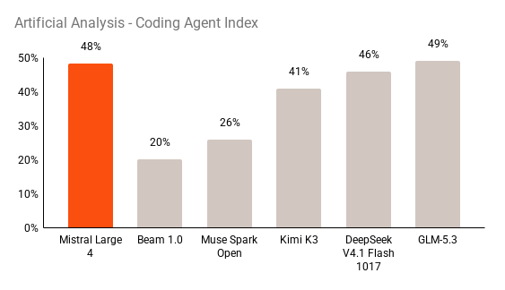

科技產品 T1

官方模型卡引用的比較圖，非本報實測；測試結果不能泛化到所有任務。 Mistral AI／官方模型卡
Mistral 釋出 Large 4 改進版開放權重，商業代管仍須核對授權條件
發佈時間
Mistral AI／Mistral Large 4
Mistral 開放經後續訓練改善的 Large 4 權重，提供可調整推理深度與自行部署選項，但不能把開放權重誤寫成任何商業用途均不受限制。
- 模型卡列約1兆總參數、每 token 約490億啟用參數；含嵌入及輸出層的520億口徑不同，並非互相矛盾。
- 支援100萬 token 上下文與文字、圖片輸入；推理深度有 low、medium、high，預設 high。
- Mistral Ecosystem Open-Weight License 對 MaaS 業者商用另設授權要求；專用資安版本也僅供審核通過的企業合作方。
完整報告收合報告
事件背景與影響
企業可自行評估部署與資料治理，授權範圍及硬體成本則會影響實際採用方式。
事件與發佈依據
10/29 官方 OSS 公告，與10/6預覽不同，這次實際提供改進版權重。
收錄紀錄
10/18至10/31十四份日報無此權重釋出事件；無命中後已核對同窗產品表。
尚待確認
效能及比較圖來自官方與模型卡引用的測試，非本報實測；不能外推到所有任務、語言或硬體。
相關實體與概念
混合專家模型、開放權重、自行部署、模型授權。
科技產品 T2
Apple 台灣 App Store 標準佣金由30%降至26%，10月31日起適用
發佈時間
Apple／台灣 App Store
Apple 調整台灣 iOS、iPadOS 店面的標準佣金，付費 App 與適用的 App 內購由30%降為26%，不是全面取消平台抽成。
- 新費率自10/31生效，開發者不必先簽新版條款才能享有這次調降。
- 不能將標準佣金套用到所有訂閱、小型開發者或特殊方案，仍須依各自適用條款核對。
- 公平會接受相關承諾並保留未履行時恢復調查的可能，不等於已排除所有競爭疑慮。
完整報告收合報告
事件背景與影響
開發者的收入分配與上架營運條件改變；消費者價格是否下降仍由業者定價決定。
事件與發佈依據
Apple Developer 10/29正式公告，10/31實施台灣店面條款變更。
收錄紀錄
十四份日報與無命中後核對的同窗產品表均未收錄這項獨立平台條款變更。
尚待確認
費率下降不是消費者售價自動下降，也不是所有開發者成本都同步減少4個百分點。
相關實體與概念
App Store、平台佣金、數位市場競爭、開發者條款。
全球焦點 1
續報｜伊朗代表赴杜哈與卡達調停方會談，外交接觸進入下一站
發佈時間
卡達持續居間斡旋，美伊之間仍有接觸管道，但沒有已簽署和平協議的證據。
- 路透引述消息人士稱，伊朗代表在杜哈與卡達調停方接觸。
- 此前德黑蘭一輪會談延續約12小時；杜哈是新的外交移動與會談節點。
- 美國是否發動下一波打擊仍未定，外交接觸與軍事風險並存。
完整報告收合報告
事件背景與影響
談判能否延續，影響中東軍事風險及能源航運的不確定性。
事件與發佈依據
10/31伊朗代表在杜哈進行調停接觸，路透當日報導；不是把先前德黑蘭會談重新計日。
收錄紀錄
2026-10-31已收錄卡達赴德黑蘭；本次新增伊朗代表轉赴杜哈實際會談。
尚待確認
不能把卡達調停寫成美伊直接談判；伊朗否認已安排直接會談，與第三方調停並非同一命題。
相關實體與概念
伊朗、卡達、美國、間接談判。
全球焦點 2
中國10月製造業 PMI 降至49.3，重新落入收縮區間
發佈時間
中國製造業 PMI 從9月50.1降至49.3，顯示受訪企業活動擴張的廣度轉弱。
- 製造業生產指數49.8、新訂單49.4，均低於50。
- 非製造業商務活動指數49.7，綜合 PMI 產出指數49.7。
- 高技術製造業 PMI 為51.3，與整體表現分化。
完整報告收合報告
事件背景與影響
訂單與生產同步承壓，為區域製造業需求和政策評估提供新訊號，但不能直接換算為 GDP 衰退幅度。
事件與發佈依據
國家統計局10/31上午09:30發布10月採購經理指數，落在全球24小時窗。
收錄紀錄
同窗十四份日報未收錄本次10月正式數據。
尚待確認
50是擴張與收縮分界；49.3不是產出減少0.7%的意思，個別產業亦有差異。
相關實體與概念
中國國家統計局、PMI、訂單、景氣擴散指數。
全球焦點 3
續報｜奧列什基撤離居民抵達烏克蘭邊境，與家屬重逢
發佈時間
來自俄占奧列什基的居民在長途轉運後抵達烏克蘭，讓人道停火從協議進入可觀察的撤離成果。
- 撤離路線包含巴士及飛機轉運，途經俄羅斯與白俄羅斯。
- 報導記錄居民與親人重逢，並提到為保護後續行動而限制公開細節。
- 運能規畫不能視為已完成撤離人數；本報不把750人的容量寫成實際抵達總數。
完整報告收合報告
事件背景與影響
在戰爭未停止下，安全通道能否落實，比單純宣布停火更能反映平民是否獲得保護。
事件與發佈依據
美聯社10/31現場報導，撤離者經俄羅斯、白俄羅斯路線抵達烏克蘭邊境。
收錄紀錄
2026-10-29已收錄局部人道停火；本次新增實際抵達與家人團聚，而非只延續撤離計畫。
尚待確認
完整人數與後續撤離進度尚未確認；一次轉運不代表所有受困者均已離開。
相關實體與概念
奧列什基、烏克蘭、白俄羅斯、人道走廊。
全球焦點 4
波蘭總統因憲法法庭爭議召集緊急政黨會談，司法對峙升高
發佈時間
總統 Nawrocki 要求與國會政黨緊急會談，憲法法庭控制權與合法性爭議從司法場域延伸至政治協商。
- 總統在前一晚返國並前往憲法法庭後，週六要求召集政黨。
- 總統一方稱憲政秩序受侵犯；政府一方則主張恢復法治。
- 有法官提出遭攻擊的指控，須與已獨立查證的事實區分。
完整報告收合報告
事件背景與影響
總統與政府對法治修復方式的分歧，增加波蘭制度運作與政治穩定的不確定性。
事件與發佈依據
Polskie Radio 10/31上午10:20當地時間報導總統召集緊急磋商；新行動發生於全球窗內。
收錄紀錄
十四份日報未收錄此一緊急會談節點；週五衝突僅作背景。
尚待確認
當事各方對合法性說法相反；本報不以其中一方指控直接認定政變或違法結論。
相關實體與概念
波蘭、Nawrocki、憲法法庭、法治。
全球焦點 5
續報｜G20外長會議落幕未發聯合公報，美國以主席聲明總結
發佈時間
G20外長未就關鍵安全議題形成共同立場，美國以主席聲明呈現討論，不應視為全體共同承諾。
- 會議10/30至31日在亞特蘭大舉行，由美國主持。
- 主席聲明討論能源安全、供應鏈及重要海峽的地緣政治緊張。
- 與會者對俄烏及中東戰事意見分歧；部分外交官稱原本就預計僅發主席聲明。
完整報告收合報告
事件背景與影響
能源安全、供應鏈與航道風險受到關注，但成員分歧限制多邊協調能力。
事件與發佈依據
10/31亞特蘭大會議結束；中央社11/1 07:32報導，早於07:58:14截點。
收錄紀錄
2026-10-31已收錄開幕及取消合照；本次新增會議落幕、沒有共同公報及主席聲明結果。
尚待確認
未發公報不等於完全沒有交流；也不能把主席國表述當作每一國均已同意。
相關實體與概念
G20、盧比歐、主席聲明、多邊外交。
全球焦點 6
10月30日結束任務儀式資料照，非10月31日現場。 UN Somalia／Adihamiid Mohamed
聯合國索馬利亞政治特派團結束任務，其他聯合國服務仍持續
發佈時間
聯合國索馬利亞過渡援助團在兩年過渡後結束政治任務，部分職能交由索馬利亞機構與聯合國其他單位承接。
- UNTMIS 在10/31正式結束任務，承接安排是過渡工作的重點。
- 約25個聯合國實體仍在索馬利亞提供服務。
- 政治特派團終止不等於所有聯合國機構、非洲聯盟行動或支援工作一併退出。
完整報告收合報告
事件背景與影響
政治支援模式改變，但安全、人道與發展需求並未隨特派團關閉消失。
事件與發佈依據
UN News 10/31報導 UNTMIS 當日任務結束；10/30儀式僅為背景。
收錄紀錄
十四份日報未收錄本次任務終止執行狀態，不以早先預告替代生效事件。
尚待確認
後續承接成效仍待觀察；配圖是10/30結束任務儀式，不是10/31現場照片。
相關實體與概念
UNTMIS、索馬利亞、聯合國、政治過渡。
全球焦點 7
美國警告莫斯科可能遭攻擊，俄方限制察里津諾園區出入
發佈時間
美國使館警告莫斯科可能出現大規模傷亡攻擊，俄羅斯安全部門稱收到美方訊息並採取應對。
- FSB 表示美國通報潛在威脅；美使館另確認有可信警告。
- 俄媒引述執法人員稱察里津諾博物館園區關閉、部分公園活動受限。
- 截點前報導的是威脅與預防措施，不是已發生恐攻。
完整報告收合報告
事件背景與影響
即使外交關係緊張，跨國安全警報仍影響公共場所管理與民眾安全。
事件與發佈依據
路透10/31報導美方威脅警告及當日園區限制，不是重述2024年音樂廳襲擊。
收錄紀錄
同窗十四份日報未收錄此地點的威脅及限制措施。
尚待確認
攻擊時間、涉案者與是否能阻止均未確認；不得挪用舊案傷亡數當本次後果。
相關實體與概念
FSB、美國使館、莫斯科、察里津諾。
全球焦點 8
加州 Fairfield 萬聖節用品店槍擊造成1死6傷，警方追查嫌犯
發佈時間
Fairfield 一間 Spirit Halloween 門市發生槍擊，一名31歲女子死亡，另6人受傷；警方仍調查涉案者與動機。
- 地點是加州 Fairfield 的 Solano Town Center。
- FOX／KTVU 報導1死6傷，傷者狀況不一。
- 截點前報導未確認嫌犯身分或逮捕結果；警方初步認為可能具針對性。
完整報告收合報告
事件背景與影響
節慶購物場所的暴力事件造成平民傷亡，也凸顯公共空間安全與緊急應變風險。
事件與發佈依據
事件10/30約20:30 PDT，即10/31約11:30台北時間，落在全球窗內；FOX報導於10/31發布。
收錄紀錄
十四份日報未收錄此起 Solano Town Center 槍擊。
尚待確認
動機及死者是否懷孕仍有待正式確認；不把家屬說法寫成驗屍結論，也不沿用報導中錯誤的城市方位。
相關實體與概念
Fairfield、槍枝暴力、公共安全、警方調查。
全球焦點 9
達卡青年奧運10月31日登場，非洲迎來首個奧運賽事
發佈時間
塞內加爾承辦達卡青年奧運，讓奧運賽事首次落地非洲，焦點包含年輕運動員參與及大型賽事的區域意義。
- 官方列預計2,655名運動員、204個國家奧會及青年難民隊參與。
- 賽事期間為10/31至11/13，包含達卡及周邊場地。
- 媒體約2,700人的概數與官方較精確規畫數不必視為互斥；本報不把預計名單當最終到場統計。
完整報告收合報告
事件背景與影響
非洲主辦能力與國際體育代表性獲得新舞台，但青年奧運規模與成人夏季奧運不同。
事件與發佈依據
ANOC及AFP當日報導達卡2026青年奧運登場，賽期10/31至11/13。
收錄紀錄
十四份日報未收錄本次實際開賽事件，不把更早籌備計畫再當新品聞。
尚待確認
部分報導發布時開幕儀式仍為預定，本報只確認賽事當日登場，不據預告宣稱儀式已圓滿結束。
相關實體與概念
Dakar 2026、青年奧運、塞內加爾、ANOC。
全球焦點 10
台灣同志遊行在台北登場，主辦方估逾17萬人參與
發佈時間
第24屆台灣同志遊行以「聲做伙聽，路做伙行」為主題，主辦方估計超過17萬人參與，逾180個團體報名。
- 遊行10/31在台北舉行，隊伍約14:30出發。
- 人數為主辦單位估計，不是逐人核驗的官方統計。
- 活動前15萬人的預測與活動後17萬人的估計屬不同時間口徑，應分開理解。
完整報告收合報告
事件背景與影響
亞洲重要的性別平權集會持續提供公共討論空間，議題包括傾聽差異與多元共融。
事件與發佈依據
中央社10/31 17:45首發，報導當日下午實際遊行；不以活動前預估代替事後數字。
收錄紀錄
十四份日報未收錄第24屆台灣同志遊行實際舉行事件。
尚待確認
集會規模不等於社會所有群體立場一致；平權及執法爭議仍需持續公共檢視。
相關實體與概念
台灣同志遊行、LGBT+、性別平權、公民社會。
研究備註
時間、來源與後續追蹤
研究截點 2026-11-01 07:58:14（Asia/Taipei）
研究時間與範圍
研究截點：2026-11-01 07:58:14（Asia/Taipei）。全球新聞：2026-10-31 07:58:14 至 2026-11-01 07:58:14（Asia/Taipei）。科技產品：2026-10-18 07:58:14 至 2026-11-01 07:58:14（Asia/Taipei）。